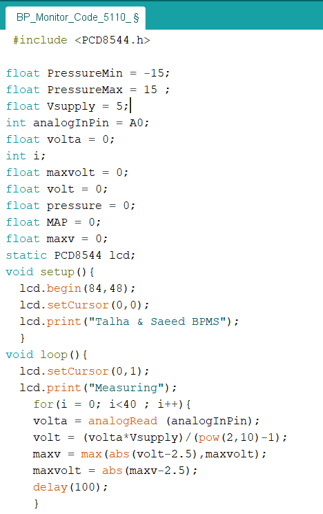
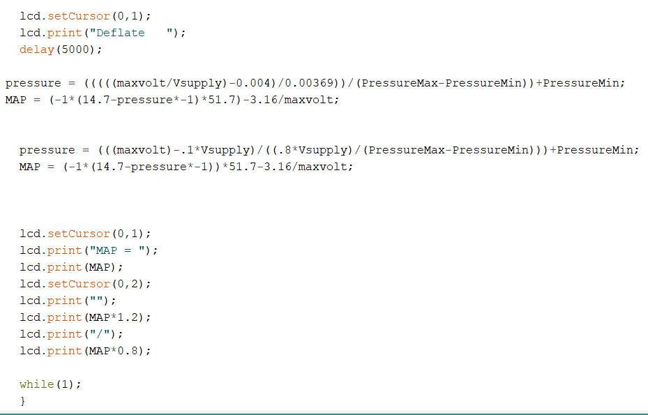

Semester Project
Introduction
The objectives of this Project is to made the device like:Our semester project is to design and build a portable blood pressure monitor device that can measures the user's blood pressure using hand cuff. Blood pressure monitor is biomedical instrument which has tremendous use daily life. It is used in hospitals,clinics and homes to measure the blood pressure. The device we made is portable and we can take in pocket for blood pressure meaurement. For doing so we require a pressure sensor, microcontroller device, Nokia 5110 LCD and by using the code device display the the final result. We have been worked on this project for 4 to 5 months and finally it is in working condition.
This project is made by Talha Abdul Rehman and Saeed Akbar Khan.
The generic product we intend to have at the end of this semester would look like this.
Distribution of Tasks
Basically, we worked together regardless of who has done how much work but keeping report requirement here is the list in which we have written about tasks.| Topics | Talha Abdul Rehman | Saeed Akbar Khan |
| Review of literature/datasheets | ✔ | ✔ |
| Selection of components | ✔ | X |
| Design of Electrical Circuit and PCB layout | ✔ | X |
| Soldering of Components on PCB | X | ✔ |
| CAD Solidworks Design | X | ✔ |
| Design of finished product | ✔ | X |
| Writing firmware | ✔ | X |
| Testing/Debugging of hardware software and final Assembly | X | ✔ |
The project implmentation plan is presented in the form of Gantt Chart is as follows:
High Level Design
This section includes the high level design for connection and working of our project components.This is the diagram of our project layout which we use to design in our project.
Principle of Operations
Execution of the program is very simple and easy to understand. It starts By inflating the air in the cuff and the air tube is connected with pressure sensor which gives blood pressure in high-level analog output in mili-volts that is proportional to the applied pressure and that analog output is given to micro-controller uno in which I have burned the program which caculates blood pressure in systolic and dysystolic and then the calculated result is displayed on the Nokia LCD.- Power supply
- The Micro-controller
- Pressure Sensor
- Nokia LCD (5110)
- Inflating Cuff
- Other Discrete Components
We used 9v battery supply given to header and give supply to voltage regulator which inturn converts 9VDC to 5VDC, which is the requirement for our project to work properly. .
We used ATMEGA328P IC for storing program and display output. It consists of the 32 pins. From these pins, we use 5 digital pins for displaying LCD and 1 analog pin to take input from pressure sensor
We used a differential pressure sensor (MPX4250DP) which gives blood pressure output signal in mili-volts. This sensor meaures the value of pressure by using hand cuff. It's output is given on the A0 pin of ATMEGA328P. It's pressure range is 0-250 kPa. It's input voltage range is 4.86-5.35V.

We used NOkia LCD which has 8 pin connector to display the output.
Manually inflating cuff is commonly available. It is tightly placed on arm to get pressure for the pressure sensor.
1) Resistors
2) Capacitors
3) Potentiometer
4) Headers
Circuit Design Process
Before started the design process with basic prototype of the system on breadboard to validate our designThe blood pressure meaurement of our class fellow and his blood pressure meaurement picture is there.
PCB Designing Process
In this, we design the circuit on the eagle software which is use for PCB. The eagle work is given below.Electrical schematic
This is electrical schematic of the project on eagle software.Once the design was verified, the circuit schematic was prepared in Eagle.
Shematic description
This is electrical schematic consists of two main circuits. First is the basic circuit to operate ATMEGA328P, while the other is connection of pressure sensor with ATMEGA328P and LCD connection with ATMEGA328P.
PCB Routing
PCB routing picture on Eagle software.The circuit diagram with trace, pads, drills & package layers visible.
Description
The main point in PCB designing is to minimize the foot print of the circuit. With help of our mentor we managed to bring down the size of our circuit to almost 2 x 1.67 inches.Challenges Faced in Routing
First we faced some problems in designing, which we mostly take help from our mentor and made the design which is shown above. The main problem is that the routing/path decision for the components is very difficult.Bill of Material
The components used in project are written on the page and there DIP components are placed in front of them.
PCB Layout
description
Populated Circuited Board
description
From this exercise we gained first hand experience of soldering SMD and DIP components on the circuit board.
Description
This PCB circuit includes the places for the components and holes for header connections. We soldered all the components on the board. From our bitter experience we learnt that keeping solder iron on maximum temperature can easily peal away the traces.The populated PCB pic is also added which give the strcuture of components we add later.
Challenges faced during Soldering
We first solder all components but we faced many problems in that circuit. The main problem we faced is that the connection on PCB are short and for that we desolder the components. The solution to this problem is that when a component is solder check its connectivity. Other problem that we faced is that component are losely solder which shows the connection when we test through the multimeter but the circuit not operate. So, we rectify this problem by discussing with Sir Nadir and he give the solution that we solder the components carefully again. This solution work well for us.Procedure to Burn Bootloder
By using the FTDI cable we boot the PCB. Bootloder is uploaded to program the ATMEGA328P. There are placed pin on PCB where we connect FTDI.
Problems In Bootloading
First we faced problem in boot loading the PCB the problem is that the Pins are not soldered well. Also, we check all the connection by using DMM to check connectivity. We spent about 5 hours to rectify the problem by taking helping hand from our instructor.
Working Prototype

Software Development
Description
The code was borrowed from the website which is given in the refrence. The code we used is given as 
First pic contain the code which intiallized the nokia LCD. The dimension of the LCD is given there.The global variables are also decleared there.
The dimension of the LCD is decleared in code. In the loop, the meauring of the pressure is done. This is code that actually calculates the pressures.
We created an array of the output voltages using a for loop. The loop is set to run 50 times with a delay of .25s. This number of values corresponds to about 12.5s. Cuff inflation after this amount of time was too tight for our "patient." You can adjust these values as you see fit. Since Arduino is a 10bit system, the analogRead function returns an integer within the rang [0,1023]. volt is calculated by converting this integer value into its corresponding voltage. The for loop also stores the maximum voltage as data is collected by the Arduino. We subtracted 2.5V from this volt due to the 2.5V offset that the Pressure sensor has when both ports are exposed to atmospheric pressure.
In the second picture, there is main code for blood pressure meaurement. The applied pressure (pressure) is calculated using the equation on the Pressure sensor's data sheet. However, we used a differential Pressure Sensor which mean the pressure we calculated is actually the difference between Ports 1 and 2. MAP is the pressure at Port 2 and is calculated by subtracting the pressure from atmospheric pressure which is 14.7 psi. This value is multiplied by 51.7 to give MAP in units of mmHg. There is an additional term in the equation for MAP.
Design of Enclosure Casing
As the enclosure design of our project is given as:
The design we choose is of heart shape. The reason for choosing this design is that we work with blood pressure which is basically of medical field and some how our project is related with the heart. We choose this design after discussing with the teacher.
CAD Design
The CAD design is done in form of heart. The dimension of the PCB is meaured first which is 46mm*50mm. Also the dimension of LCD is meaured which is 34mm*40mm. Also we meaured the dimension of all the components.
The cad file is pasted in the appendix.
Results
The video of the working blood pressure mointoring system is given which shows the blood pressure of our fellow.Conclusions
As this subject is Project based subject and we do our project in this whole semester. As this is our first big project in which we learn a lot of things. We learn how to tackle with the problems as we faced in project.The routing problem and how to tackle these problems. We come through some problems which are very difficult to tackle and some are very ordinery problems. This thing build us for final year project and how we can bulid good project.Intellectual Properties and Ethics Considerations
We design the circuit by using datasheets of the components and by taking instructions from the professer. The topologies of the circuits are mentioned in books. Although, We searched different sites for our work. We take the blood pressure meauring code from one site where the code is already placed and we use some of his circuit design but mainly circuit is designed by us.The site we used for our work is open source which everyone can use. We change the code, which we took from site, for our requirement. Thus, we are sure that we do not violate any intellectual property of the existing design.
The site from where we copy the code is www.instructables.com
Commercialization Aspects
The project we made is not a commercial grade but it is low cost blood preesure monitoring system with some works which can be commercialized. For commercialization, we can implement heart beat and temperature meaurement in this project by using simple sensor which is going to be very impressive in market.Reference
The website we follow are as:1- www.instructables.com
2- IJraset
3- Cornell University
4- IJ PDF
Appendix
All the files which we used in our project are given below in zip fileIn the below table We write the apporximate cost of each component which we used in our project.
| Components | Quantity | Cost |
| Pressure sensor | 1 | PKR 1800 |
| Hand Cuff | 1 | 250 |
| PCB | 1 | 800 |
| Nokia LCD | 1 | 450 |
| Resistors | 6 | 70 |
| Capacitors | 9 | 100 |
| LED | 2 | 50 |
| Potentiometer | 1 | 30 |
| Rechargable Battery | 1 | 120 |
| Voltage Regulator | 1 | 20 |
| Headers | 6 | 50 |
| Switches | 1 | 10 |